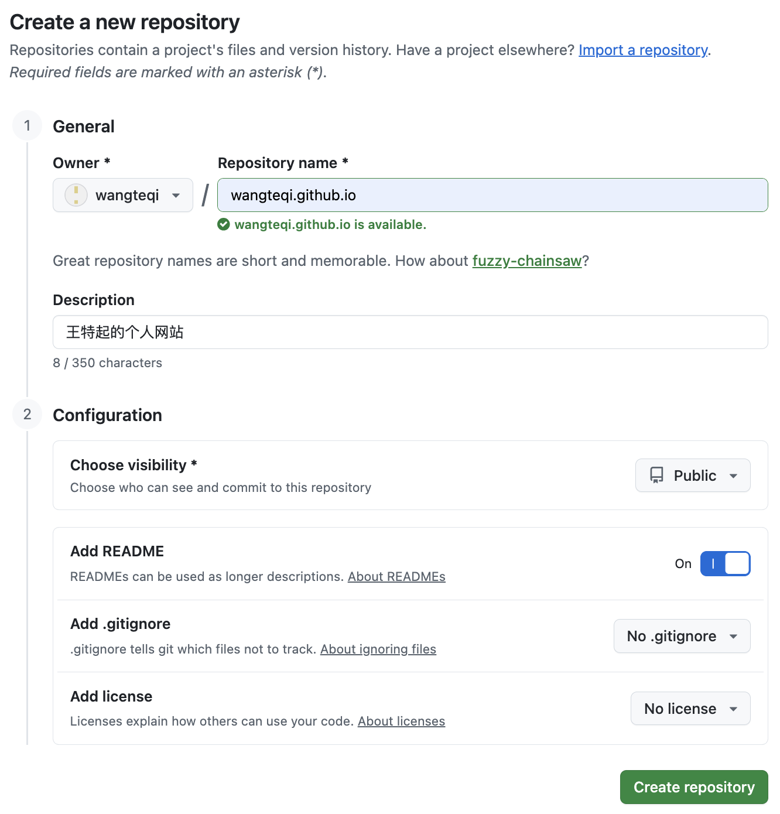
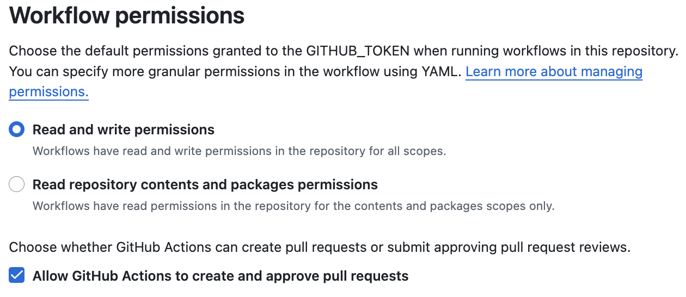
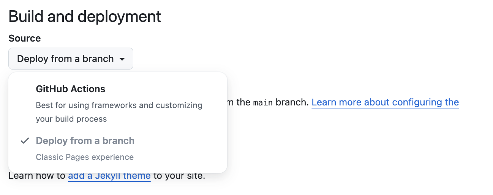

2026.7.28
王特起
个人网站搭建⚓︎
配置Github仓库⚓︎
创建Github仓库⚓︎
- 设置Repository name：wangteqi.github.io
- 设置Description：王特起的个人网站
- 设置Configuration/Add README：On

Actions权限设置⚓︎
在Github仓库 Settings/Actions/General/Workflow permisssions 中设置

Pages设置⚓︎
在Github仓库 Settings/Pages/Build and deployment/source 中选择 Github Actions

使用Zensical搭建网站⚓︎
安装Zensical⚓︎
-
创建虚拟环境
-
安装
-
在PyCharm中初始化项目
工作流文件⚓︎
-
文件路径：./github/workflows/docs.yml
-
文件内容（在原始文件做了以下修改）
- 修改工作流名称为 site-publish
- 删除触发条件中 master分支
- 添加 注释
# 定义工作流名称 name: site-publish # 触发条件，这个工作流会在每次向仓库main分支推送代码时触发 on: push: branches: - main # 权限 permissions: contents: read pages: write id-token: write # 构建工作流中的任务 jobs: # 任务名称 deploy: # 指定环境 environment: name: github-pages url: ${{ steps.deployment.outputs.page_url }} # 指定了运行该任务的虚拟环境是最新版本的Ubuntu runs-on: ubuntu-latest # 执行步骤 steps: - uses: actions/configure-pages@v6 - uses: actions/checkout@v7 - uses: actions/setup-python@v6 with: python-version: 3.x - run: pip install zensical - run: zensical build --clean - uses: actions/upload-pages-artifact@v5 with: path: site - uses: actions/deploy-pages@v5 id: deployment
Zensical配置文件⚓︎
-
文件路径：./zensical.toml
-
文件内容
[project] # 网站名称 site_name = "王特起的个人网站" # 网站地址 site_url = "https://wangteqi.github.io" # 网站说明 site_description = "记录日常" # 网站作者 site_author = "王特起" # Github仓库名称 repo_name = "wangteqi/wangteqi.github.io" # Github仓库地址 repo_url = "https://github.com/wangteqi/wangteqi.github.io" # css配置 extra_css = ["assets/stylesheets/extra.css"] # JavaScript配置 extra_javascript = [ "assets/javascripts/mathjax.js", "https://unpkg.com/mathjax@3/es5/tex-mml-chtml.js" ] # 版权信息 copyright = "Copyright © 2026 ~ now | 王特起" ####################################################################################################### ##########################################平时修改部分################################################### # 显式导航 nav = [ { "首页" = "index.md" }, { "开发技术" = [ { "开发技术总览" = "dev/index.md" }, { "操作系统与环境" = [ { "macOS 配置" = "dev/system/macos.md" }, { "Ubuntu 配置" = "dev/system/ubuntu.md" } ] }, { "开发工具基础" = [ { "Git 基础" = "dev/tools/git.md" }, { "Linux 命令基础" = "dev/tools/linux.md" }, { "Markdown 基础" = "dev/tools/markdown.md" }, { "网站搭建基础" = "dev/tools/website.md" }, ] }, ] }, { "个人研究" = [ { "个人研究总览" = "research/index.md" }, { "深度学习" = [ { "服务器配置" = "research/deep-learning/server.md" }, { "梯度下降算法" = "research/deep-learning/bp.md" }, { "编程基础" = "research/deep-learning/program.md" }, { "计算机视觉基础" = "research/deep-learning/cv.md" }, { "自然语言基础" = "research/deep-learning/nlp.md" }, ] }, { "基础模型" = [ { "开放词汇" = "research/basic-model/open-vocabulary.md" }, ] }, { "机器人策略学习" = [ { "ACT 论文" = "research/robot-policy/act.md" }, { "VITA 论文" = "research/robot-policy/vita.md" } ] }, { "视觉—语言—动作模型" = [ { "π0 论文" = "research/vla/π0.md" }, { "π0.5 论文" = "research/vla/π0.5.md" } ] }, ] }, { "实验与复现" = [ { "实验与复现总览" = "workbench/index.md" }, { "图像编辑实验" = [ { "AR 图像编辑" = "workbench/image-edit/edit.md" } ] }, { "机械臂实验" = [ { "reBot b601-DM 调试记录" = "workbench/robotics/rebot-b601-dm.md" } ] } ] }, { "关于我" = [ { "个人简介" = "me/index.md" }, { "日常生活" = [ { "课题研究思路" = "me/life/thesis-topic.md" }, { "读论文的方法" = "me/life/paper-tips.md" }, ] } ] } ] # 标签 [project.extra.tags] development = "tags-development" server = "tags-server" [project.theme.icon.tag] default = "lucide/tag" tags-development = "fontawesome/solid/code" tags-server = "fontawesome/solid/server" ##########################################平时修改部分################################################### ####################################################################################################### # 社交链接 [[project.extra.social]] icon = "fontawesome/brands/github" link = "https://github.com/wangteqi" name = "github.com" [[project.extra.social]] icon = "fontawesome/brands/x-twitter" link = "https://x.com/teqiwang" name = "x.com" [project.theme] # 现代主题 variant = "modern" # 网站语言 language = "en" # 主题功能 features = [ # 页脚 "navigation.footer", # 查看/编辑页面源码 "content.action.view", "content.action.edit", # 页面切换 "navigation.instant", "navigation.instant.prefetch", "navigation.instant.progress", # 顶部导航 "navigation.tabs", # 导航结构 "navigation.tracking", "navigation.sections", "navigation.path", "navigation.indexes", # 阅读体验 "toc.follow", "navigation.top", # 搜索 "search.highlight", # 选择/复制代码 "content.code.select", "content.code.copy", # 同步内容选项卡 "content.tabs.link", # 脚注悬浮提示 "content.footnote.tooltips", # 悬浮提示 "content.tooltips" ] # 跟随系统主题 [[project.theme.palette]] media = "(prefers-color-scheme)" toggle.icon = "lucide/sun-moon" toggle.name = "Switch to light mode" # 浅色主题 [[project.theme.palette]] media = "(prefers-color-scheme: light)" scheme = "default" toggle.icon = "lucide/sun" toggle.name = "Switch to dark mode" # 深色主题 [[project.theme.palette]] media = "(prefers-color-scheme: dark)" scheme = "slate" toggle.icon = "lucide/moon" toggle.name = "Switch to system preference" # 字体 [project.theme.font] text = "Noto Serif Simplified Chinese" code = "JetBrains Mono" # 图标 [project.theme.icon] logo = "lucide/sparkles" repo = "fontawesome/brands/github-alt" view = "material/eye" edit = "material/pencil" # Markdown基础扩展 [project.markdown_extensions.abbr] [project.markdown_extensions.admonition] [project.markdown_extensions.attr_list] [project.markdown_extensions.def_list] [project.markdown_extensions.footnotes] [project.markdown_extensions.md_in_html] [project.markdown_extensions.toc] title = "目录" permalink = "⚓︎" permalink_title = "Anchor link to this section" [project.markdown_extensions.toc.slugify] object = "pymdownx.slugs.slugify" kwds = { case = "lower" } [project.markdown_extensions.tables] # Markdown额外扩展 [project.markdown_extensions.pymdownx.arithmatex] generic = true [project.markdown_extensions.pymdownx.blocks.caption] [project.markdown_extensions.pymdownx.betterem] [project.markdown_extensions.pymdownx.caret] [project.markdown_extensions.pymdownx.mark] [project.markdown_extensions.pymdownx.tilde] [project.markdown_extensions.pymdownx.details] [project.markdown_extensions.pymdownx.emoji] emoji_index = "zensical.extensions.emoji.twemoji" emoji_generator = "zensical.extensions.emoji.to_svg" [project.markdown_extensions.pymdownx.highlight] pygments_lang_class = true anchor_linenums = true line_spans = "__span" [project.markdown_extensions.pymdownx.inlinehilite] [project.markdown_extensions.pymdownx.keys] [project.markdown_extensions.pymdownx.smartsymbols] [project.markdown_extensions.pymdownx.snippets] auto_append = ["docs/assets/abbreviations.md"] [project.markdown_extensions.pymdownx.superfences] custom_fences = [ { name = "mermaid", class = "mermaid", format = "pymdownx.superfences.fence_code_format" } ] [project.markdown_extensions.pymdownx.tabbed] alternate_style = true combine_header_slug = true [project.markdown_extensions.pymdownx.tabbed.slugify] object = "pymdownx.slugs.slugify" kwds = { case = "lower" } [project.markdown_extensions.pymdownx.tasklist] custom_checkbox = true -
后续添加笔记
- 显式导航部分按需添加，如果需要修改文档图标颜色，同时修改extra.css文件
- 标签部分按需添加
js文件配置⚓︎
-
文件路径：./docs/assets/javascripts/mathjax.js
-
创建文件
-
文件内容
// 支持数学公式 window.MathJax = { tex: { inlineMath: [["\\(", "\\)"]], displayMath: [["\\[", "\\]"]], processEscapes: true, processEnvironments: true }, options: { ignoreHtmlClass: ".*|", processHtmlClass: "arithmatex" } }; document$.subscribe(() => { MathJax.startup.output.clearCache() MathJax.typesetClear() MathJax.texReset() MathJax.typesetPromise() }) component$.subscribe(({ref}) => { if (ref.classList.contains("md-annotation")) MathJax.typesetPromise([ref]) }) -
目前只用于支持数学公式
css文件配置⚓︎
-
文件路径：./docs/assets/stylesheets/extra.css
-
创建文件
-
文件内容
-
目前只用于图标颜色修改
缩略词文件配置⚓︎
-
文件路径：./docs/assets/abbreviations.md
-
创建文件
-
文件内容
-
用于术语表
使用Git推送代码⚓︎
-
第一次发布
-
创建gitignore文件
-
文件路径：./gitignore
-
文件内容:
-
-
初始化本地仓库
-
添加远程仓库
-
从远程仓库拉取最新内容，并在main分支上合并最新内容
-
在main分支上提交
-
推送到远程仓库
-
-
添加内容后发布
-
从远程仓库拉取最新内容，并在main分支上合并新内容
-
创建并切换到新分支
-
添加新内容
-
在新分支提交
-
切换到main分支，并在main分支上合并新分支添加的内容
-
推送到远程仓库的main分支
-
删除本地分支
-